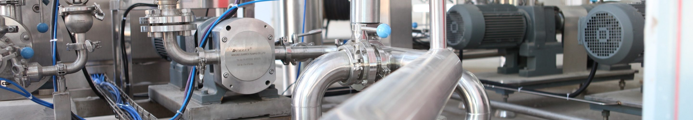

Ciclos de Informática
¿Te interesan los ordenadores, las redes y la programación?
Ciclos de Electricidad
¿Te interesan las instalaciones eléctricas, la automatización y la robótica?
Cursos de entrenador de Fútbol
¿Te interesa ser entrenador de fútbol profesional?
Cambia tu futuro
El profesorado es consciente que para afrontar los retos del siglo XXI se necesitan ciudadanos responsables y solidarios, capaces de implicarse en la consecución de una sociedad más justa y más humana. Para ello se promueve una educación que ayuda a los alumnos a tomar sus propias decisiones y actuar con libertad personal.
Instalaciones
Nuestras instalaciones están equipadas con la última tecnología, para ofrecer a nuestros alumnos el mejor aprendizaje y la más completa formación y prácticas en relación a sus estudios y especialización. De esta forma, quienes estudien con nosotros, se aprovecharán de las ventajas de trabajar con los robots de última generación, un ordenador por cada alumno, todos los útiles y herramientas necesarios para realizar sus proyectos.
Atención a la Diversidad
En el centro se desarrollan acciones educativas para dar respuesta a las necesidades de todo el alumnado y, entre ellos, a los que requieren una actuación específica derivada de factores personales o de las capacidades intelectuales. Estas acciones formativas se adecuan al ritmo y estilo personal de aprendizaje de cada alumno. En el diseño del horario del curso se tiene en cuenta que cada profesor esté disponible durante, al menos, una sesión en un horario que no interfiera con el resto de las actividades docentes. Esto propicia que los alumnos, especialmente los que están vinculados al mundo laboral, puedan solucionar sus dudas y recibir la atención adecuada.
Competencias personales
La formación no solamente debe transmitir valores, sino generar hábitos de acción y tener en cuenta el protagonismo de los alumnos como sujetos activos de su proceso formativo. Para lograr esto se desarrolla un Plan de Desarrollo Personal basado en 25 competencias, entre las que se encuentran el estudio, la creatividad, el criterio, la sinceridad, la profesionalidad, la valentía, etc. Los docentes que imparten las materias potencian que los alumnos estén motivados y desarrollen las competencias de forma global, no aisladas e independientes.
Asesor Personal
Cada alumno dispone de un Asesor Personal. Este asesor ayuda a los padres y al propio alumno a diseñar el Proyecto Personal de Mejora.
Familias
La familia es el ámbito principal que contribuye al desarrollo personal, donde se adquieren los principios y actitudes fundamentales para el desarrollo moral, intelectual y físico. La responsabilidad de los padres abarca todos estos aspectos de la educación de los hijos. Nuestro objetivo primordial es fomentar y facilitar la dedicación de los padres a la educación de sus hijos. El vínculo de los padres con el centro se materializa en las entrevistas personales con los profesores, la Asociación de Padres de Alumnos (APA).
Erasmus
El colegio Montecastelo tiene concedida la Carta Erasmus de Educación Superior 2014-2020 que posibilita a nuestros alumnos realizar el período de prácticas en empresas (Formación en Centros de Trabajo) en otro país de la UE. Los alumnos interesados realizan un curso de idioma y, si lo superan, obtienen una Beca Erasmus para sufragar los gastos de viaje, alojamiento y manutención derivados de su estancia en el extranjero.